Ce qui a changé, ce qui expire, ce qu’il faut faire dans quel ordre
Aurora concentre l’essentiel de ses récompenses à durée limitée sur la deuxième quinzaine de novembre. Après, il ne reste que les événements longs. L’ordre des choses compte donc plus que le temps de jeu disponible.
OfficielVérifié le 15 nov.
Nouveau le 15 novembre : Team Jade a publié un article détaillé sur Brakkesh 2.0. Deux points changent la donne côté Operations : l’insigne de faction conserve désormais sa progression entre les raids, et une mission de faction majeure peut déclencher une chasse, où des escouades adverses reçoivent une zone de recherche approximative qui se met à jour. Le détail tactique est sur la page Cartes.
Armes : les valeurs qui ont bougé
Les flèches indiquent le sens du changement pour le joueur. Les valeurs entre parenthèses sont celles d’avant le correctif.
MCX LT · audition des tirs, tous modes : 500 m → 350 m (plus discret)▲
Chute de dégâts Operations · 27/54 m à 0,85/0,70 → 27/40 m à 0,90/0,70 (meilleur à moyenne portée)▲
Lecture pratique : le nerf de l’AKM est le changement le plus lourd de la liste, un combo qui portait à 74 m ne porte plus qu’à 45 m. Si tu avais un build AKM « longue portée » enregistré, il est devenu un build de moyenne portée, sans que rien ne te prévienne dans l’interface.
Nouvelle mécaniqueCombat
Une balle peut traverser plusieurs ennemis
Le correctif d’Aurora ajoute la pénétration à travers plusieurs cibles : une balle peut traverser et blesser plusieurs adversaires alignés. C’est un argument de plus pour les munitions à forte pénétration et pour les couloirs, et une raison de ne jamais s’aligner derrière un coéquipier.
Conséquence tactique : en couloir, l’alignement ennemi devient une opportunité ; en extraction, ne fais jamais la queue derrière un allié dans un escalier.
OpérateursAjustements
Rover, N‑Two, Nox, Shepherd
Rover : Clover détecte selon le bruit réellement produit (course, marche silencieuse, actions) et peut bondir à distance ; portée de détection de la fusée éclairante 40 → 45 m ; en Détonation, charges 7 → 6 et le fusil-fléchette réduit les PV max de 30 → 45.
N‑Two : Cryo-Flask dure 7 s au lieu de 10, mais inflige 10 PV par 0,5 s au lieu de 8 — plus court, plus violent.
Nox : le passif de Warfare est renommé Deep Trauma → Revenant ; son attaque silencieuse ne s’allonge plus quand il est le dernier survivant.
Shepherd : la trappe sonore ne bloque plus les balles, elle ne sert plus de couverture improvisée.
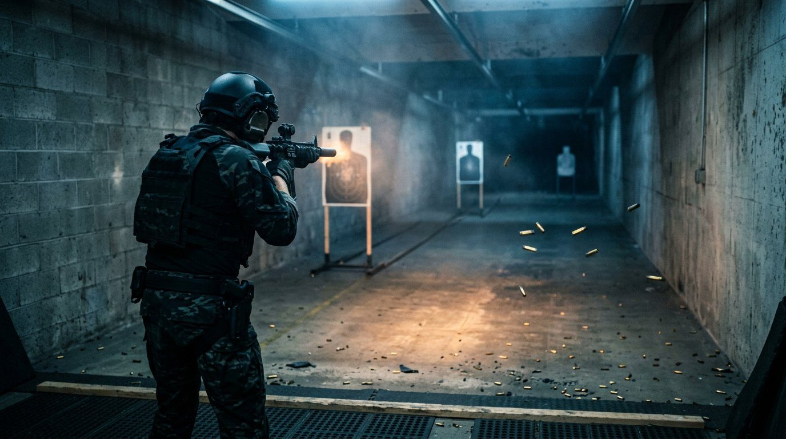
Stand de tir 2.0 : entraînement daté
Cibles mobiles, sessions chronométrées, statistiques de tirs et de têtes, cibles dédiées aux capacités, et changement d’opérateur sans quitter le pas de tir.
Trois outils arrivés avec Aurora
Stand de tir 2.0. Il permet enfin de mesurer : une session chronométrée avec précision et têtes touchées. Deux builds comparés dans la même session, c’est une décision, pas une impression.
Mode immersif (PC, Warfare) : masque l’essentiel de l’interface en Attaque/Défense, Roi de la colline et Victory Unite. Plus d’information à l’écran, moins de confort, à réserver aux modes où tu connais déjà les objectifs.
Fonctions Unreal Engine 5 étendues sur Zenith Port, en option : si les images par seconde chutent, c’est le premier réglage à désactiver. La jouabilité passe avant la vitrine.
Le correctif ajoute aussi une règle de classement : au rang Hibou Ardent et au‑dessus, un gain de points réduit si tu fais équipe avec quelqu’un dont l’écart de points dépasse 600. Ce n’est pas une punition contre les amis, c’est un frein au boost organisé.
Règle de veille : après chaque correctif, vérifie trois choses dans cet ordre, les armes que tu utilises, les opérateurs que tu joues, et les tickets d’équipement disponibles (leur composition a changé avec Aurora : le ticket d’élite « équilibré » propose désormais MCX LT et AN‑94). Le reste peut attendre.
Semaine du 10 au 17 novembreFenêtre courte
Les accessoires Haavk
Le PKM Bullpup Kit, la culasse à double détente SR‑25 HVK et le chargeur M250 Monolith se débloquent par l’événement « Haavk Military Attachments », du 10 au 17 novembre, avec des valeurs différentes en Operations et en Warfare : la culasse SR‑25 gagne en contrôle et en stabilité mais perd 12 d’exactitude ; le kit PKM ajoute de la précision et du maniement en Warfare, au prix d’un peu de contrôle. Ce sont des effets de style de jeu, pas des améliorations gratuites.
Ce qui expire : la possibilité de les obtenir par cette route d’événement. L’éditeur ne dit pas qu’ils seront supprimés, mais il ne promet pas non plus la même route après le 17.
Astuce de la semaine : ouvre le compteur de l’événement dans le client plutôt que de convertir l’heure toi-même, les notes ne donnent pas d’heure de clôture univoque.
10 au 19 novembreWarfare
Battle of Zenith Port
Jouer sur la nouvelle carte, remplir les missions de l’événement, marquer des points et franchir les paliers : apparence de char Toro Scatenato, jetons d’EXP d’arme premium, et un deuxième événement « New Map » qui court jusqu’au 10 décembre pour des bons d’armement tactique. La boutique Tekniq Alloy ferme aussi le 19.
Ce qu’il faut apprendre avant la fin : les vagues de Riptide inondent les niveaux bas et déplacent le combat sur les toits. Le premier réflexe à acquérir est de mémoriser deux sorties hautes et un chemin de repli, parce que le terrain change sous tes pieds au milieu d’un échange.
17 novembreMissions Solo
Le déblocage des missions 3×3
Deux branches de missions de saison, « Broad Knowledge » et « Cleaning Work », deviennent disponibles le 17 novembre, sept jours après le lancement. C’est la route la moins violente vers le coffre 3×3 : de la collecte, de l’artisanat et de l’extraction, plutôt que des éliminations de joueurs.
Deux principes qui font gagner des raids : une mission de collecte peut valider son objectif sans extraction réussie, alors qu’une mission de gain demande une sortie réussie. Lis la description avant de partir avec un équipement cher.
20 au 26 novembreOperations
La dernière semaine Brakkesh
Les sept événements Brakkesh et la boutique de jetons ferment le 26. Passe l’insigne de faction niveau 2 avant cette date : c’est le palier qui ouvre les jalons et les chasses de faction. « Brakkesh Renewed », lui, va jusqu’au 10 décembre.
Les jetons Brakkesh viennent de trois sources qui se cumulent : les essais d’armes imposées, les combats de faction (récupérer un badge Ahsarah ou Haavk dans le raid et réussir un jalon) et la collecte sur la carte. Faire les trois dans le même raid est la seule façon de tenir le rythme.
Le reste du calendrier, une fois le mois de novembre passé
Weekend Select · jetons hebdomadaires, missions du mardi 00:00 au lundi 23:59, échange de bons d’équipement toutes les semainesjusqu’au 25 janv.
Weekend Merit Boost · les trois premières parties classées Warfare comptent double14–15 nov.
Figurine de collection Soul · Roaming Blade · chances de dépôt dans les nids d’oiseaux, toutes cartesjusqu’au 25 janv.
Défis de saison, passe, AZ3 Supercriticaljusqu’au 25 janv.
Deux pièges de calendrier : les jetons Weekend Select ne se reportent pas sur la saison suivante, et la remise à zéro des missions de saison efface la progression S11 — n’achète pas un coffre de saison en fin de cycle en croyant le garder.
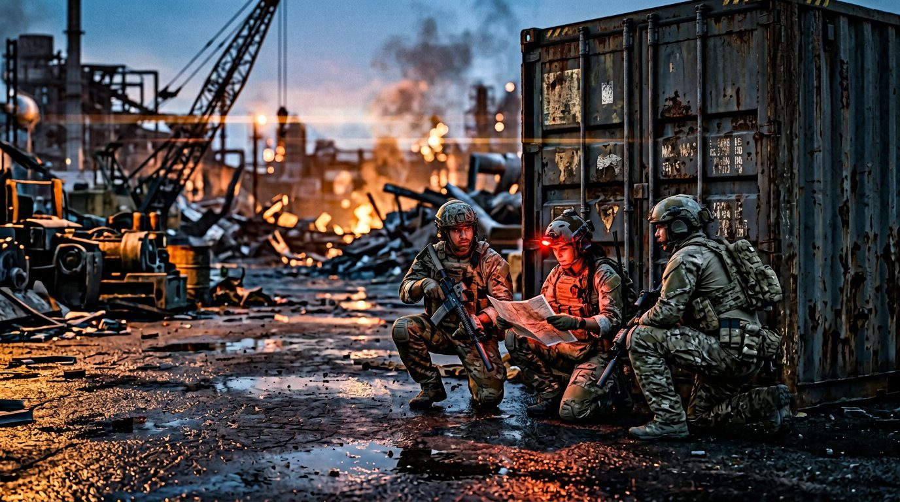
Replanifier en cours de raid
Une carte refondue ne se maîtrise pas à la première sortie. S’arrêter trente secondes, rouvrir le plan et décider d’une sortie vaut mieux que continuer par inertie.
Trois règles de priorité
Ce qui expire d’abord passe avant ce qui est amusant. Les accessoires Haavk, les paliers Zenith Port et l’insigne de faction niveau 2 ne reviendront pas ; la saison régulière, elle, court jusqu’au 25 janvier.
Une seule monnaie d’événement à la fois. Jetons Brakkesh, jetons Weekend Select et bons d’armement se gagnent dans des modes différents. Empiler les trois dans la même session dilue la progression.
Note la date, pas l’heure. L’éditeur ne publie pas d’heure de clôture univoque pour chaque événement : le compte à rebours du client est la seule référence fiable.
Compter à rebours
Du plus proche au plus lointain. Les dates viennent des annonces officielles ; vérifie-les en jeu, elles peuvent être prolongées.
Défis Martelo et AN‑94 · avatar, bons d’armement10 déc.
Collab Phantom Blade Zero · charme, avatar, emotes10 déc.
Tirage White Serpent & Crimson Viper12 déc.
AZ3 Supercritical · ouverture du mode Hard18 déc.
Fin de saison · événements de saison et AZ3 Supercritical25 janv.
Gratuit, ou payant ?
G3 Sept ÉtoilesGratuit. Temps de survie accumulé en Operations, Warfare ou Detonation jusqu’au 3 décembre.
Cosmétiques de collabGratuits. Missions jusqu’au 10 décembre.
SanguinePayant. Grand prix d’un tirage, pas d’un événement gratuit, l’erreur la plus répandue.
MarteloGratuit via le passe de saison.
Le tirage White Serpent & Crimson Viper est sans doublon : chaque tirage retire un lot. Le premier tirage coûte 10 jetons, sans garantie de prix fixe : la décision se prend avant de commencer, pas après.
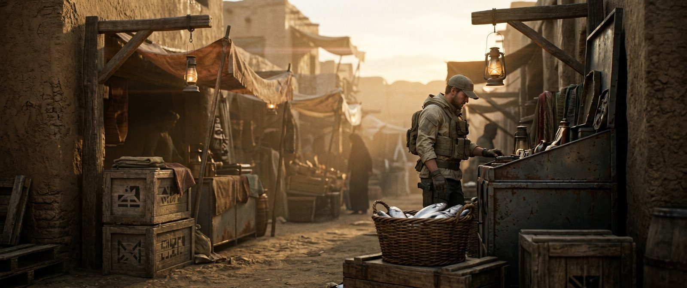
Le poisson entre dans l’économie.
Une fois la pêche débloquée (niveau Operations 17, introduction de Joe Reed à Layali Grove en facile), tes prises s’échangent au Bazar. Le Bazar affiche les matériaux requis du cycle suivant trois jours avant sa remise à zéro : tu peux préparer au lieu de subir.
Quatre niveaux, quatre XP séparés
Rang Warfare : objectifs, réanimations, soins, munitions. Le fragging pur rapporte moins qu’une partie jouée pour le point.
Niveau Operations : missions principales réussies, pas le temps passé à fouiller.
Niveau opérateur : défis spécifiques. Jouer 40 raids ne le monte pas.
Niveau arme : XP d’arme et jetons. Garde la même arme sur toute une session plutôt que d’éparpiller tes kills.
Conséquence pratique : avant de lancer une session, décide quel niveau tu montes. Le reste est du temps dilué.
Méthode
La routine qui cumule
☀
Avant de te connecter · 2 minutes
Regarde les événements et les échéances courtes. Choisis un objectif de session : G3 par temps de survie, jetons Brakkesh, niveau Operations, ou arme à monter. Réclame les récompenses en attente, elles n’attendent pas indéfiniment.
Habitude
▸
Première partie · 20 minutes
Formation de terrain (défis quotidiens) : c’est l’un des meilleurs ratios d’XP par minute du jeu, et la plupart des missions se remplissent en jouant normalement. Fais-les avant de te lancer dans une session d’extraction longue.
XP
◈
Deuxième partie · 25 minutes
Une extraction sur une carte que tu maîtrises, avec une mission principale visée avant le loot. Les objectifs donnent plus d’XP par raid qu’un sac rempli sans mission. Sors dès que la valeur dépasse le risque.
Operations
◇
Session Warfare · 30 minutes
Une carte de mérite doublée s’active sur une partie : garde-la pour une session où tu peux enchaîner, pas pour une partie écourtée. Joue l’objectif avec ta classe utile, soutien et ingénieur rapportent même sans top-frag.
Warfare
◎
Chaque semaine · mardi à lundi
Les missions de Weekend Select se rafraîchissent le mardi et se terminent le lundi suivant ; les jetons s’échangent contre des tickets d’équipement, des copies de cartes d’accès et des kits d’armes tournants. Chaque récompense a une limite hebdomadaire qui se réinitialise le mardi.
Officiel
✧
Une fois par saison
Fais le tri : événements expirés, jetons de saison précédente, tickets de coffre périmés depuis la saison 11. Vérifie ce que tu possèdes réellement avant de compter sur un coffre sécurisé que tu n’as plus.
Vérifier en jeu
Le piège des chiffres ronds : plusieurs guides promettent des rendements fixes (« 2 millions par jour », « 1 000 XP par raid »). Ces valeurs dépendent du marché, du mode, de ta survie et de ton niveau. Utilise l’estimateur de cette page avec tes propres chiffres plutôt qu’un objectif copié ailleurs.
Version Garena (Asie du Sud‑Est) : portail séparé, codes non interchangeables.
Comment reconnaître une liste périmée
Les codes finissant par XMAS datent de la vague de décembre 2025 et ont expiré le 31 janvier 2026.
Une page qui affiche 35 codes « actifs » recycle l’archive; vérifie la date de mise à jour, pas le nombre de lignes.
Aucun code connu n’a jamais donné de Delta Coins, d’opérateur ou de passe de saison.
Redeems exclusivement sur le web : il n’existe pas de champ code dans le client.
Si le courrier reste vide, redémarre le client avant de retenter.
Méthode anti-arnaque
Ne saisis jamais tes identifiants sur un site de « codes gratuits » : le seul portail légitime est celui de l’éditeur.
Ajout de vérification : certaines pages listent des « codes créateurs » à suffixe XMAS et des parrainages de streamers. Ce sont pour la plupart des codes de décembre 2025, expirés depuis janvier 2026 : une liste qui mélange encore ceux-là n’a pas été relue. Teste au maximum trois codes par session, au-delà, tu ne fais que confirmer que la liste est vieille.
Deux échéances qui se ressemblent et qui ne se valent pas
La confusion la plus coûteuse du mois vient de deux événements voisins portant sur la même carte. La Battle of Zenith Port avec ses paliers de récompenses se termine le 19 novembre. La promotion générale de la nouvelle carte, elle, reste affichée jusqu’au 10 décembre. Ce sont deux choses différentes : attendre décembre pour finir les paliers de la Battle of Zenith Port, c’est arriver après la fenêtre.
L’apparence de char Toro Scatenato est un palier de récompense, pas un bonus de connexion. Il faut ouvrir l’événement, lire les points restants, puis les obtenir en jouant la carte. Le même piège existe sur les accessoires Haavk, qui partent le 17 novembre, et sur le bloc d’événements Brakkesh, qui ferme le 26 novembre avec l’insigne de faction et la boutique de jetons.
Trois dates, donc, à traiter dans cet ordre : 17 novembre (accessoires Haavk), 19 novembre (Battle of Zenith Port et boutique d’Alloy), 26 novembre (cluster Brakkesh). Le reste de la saison court jusqu’au 25 janvier 2027 et n’a pas la même urgence.
Le calendrier des événements d’Aurora, en clair
Événement
Dates
Ce qu’on y gagne
Delta Force × Phantom Blade Zero
10 nov. → 10 déc.
Apparences inspirées des arts martiaux chinois et apparences de collaboration, en participant aux modes et aux missions actives. L’activité de collection liée au Soul · Roaming Blade — objet qui peut apparaître dans les nids d’oiseaux — court jusqu’en janvier 2027.
Nouvel opérateur Martelo
10 nov. → 10 déc.
Veronica Cardozo via le passe ; missions à faire avec le gadget de Martelo pour des bons d’armement et une carte de visite.
Battle of Zenith Port
10 nov. → 19 nov.
Objectifs d’événement sur la nouvelle carte Warfare : apparence de char Toro Scatenato et objets d’expérience d’arme.
Brakkesh Arsenal et Renewed Recon
jusqu’au 26 nov.
Fin de la fenêtre d’événement sur Brakkesh. Ce qui n’est pas fait avant ne l’est plus après.
Detonation Supply
10 nov. → 16 nov.
Parties de Détonation contre bons d’armement et TurBricks. Missions renouvelées chaque mardi.
Season Challenge
jusqu’au 25 janv. 2027
La fenêtre longue : les récompenses de défi de saison restent accessibles jusqu’à la fin.
Deux remarques de méthode. Les récompenses d’événement de la boutique sont annoncées comme garanties en 90 tirages : c’est un plafond de dépense, pas une promesse de gratuité. Et plusieurs apparences de collaboration passent par des systèmes séparés, donc tout ce qui porte un nom de collaboration n’est pas automatiquement gratuit.
Quatre ajouts d’Aurora qu’on remarque une semaine trop tard
Les notes de version d’Aurora parlent beaucoup de l’opérateur Martelo, de la carte Zenith Port et du fusil AN-94, parce que ce sont les éléments visibles. Quatre changements plus discrets modifient pourtant la routine d’un joueur d’Operations, et ils se découvrent d’ordinaire en cherchant autre chose.
Ajout
Où le trouver
Pourquoi ça compte
Plans de chargement
Débloqués au niveau 35 d’Operations
Ils fixent l’ordre dans lequel les munitions se chargent. Sur un chargeur mixte, cet ordre décide quelle balle sort en premier quand la protection en face change de niveau.
Pas de tir 2.0
Menu d’entraînement
Cibles mobiles, sessions chronométrées, statistiques de performance et cibles dédiées aux compétences d’opérateur. On peut aussi changer d’opérateur sans quitter le stand, ce qui évite de tester un kit en raid.
Réinitialisation des missions de saison
Journal de missions
Les objectifs de la saison précédente ne sont pas repris. Un joueur qui comptait finir un palier en retard l’a perdu, et c’est la première chose à vérifier avant de planifier sa semaine.
Accessoires Haavk limités
Événement Brakkesh
Trois pièces seulement, avec des valeurs différentes en Operations et en Warfare : kit crosse à double détente pour SR-25, kit bullpup pour PKM, chargeur monolithique pour M250. Elles se récupèrent par l’événement, pas au marché.
Un mot sur les trois accessoires Haavk, parce que leurs fiches sont trompeuses : les gains et les pertes ne sont pas les mêmes selon le mode. Le kit bullpup du PKM, par exemple, fait perdre du contrôle mais gagne en précision et en maniabilité, et supprime le délai de détente — un échange qui vaut pour un joueur qui tire par rafales courtes, beaucoup moins pour un joueur qui arrose. Lire la colonne du bon mode avant d’acheter.
Neuf événements sur la même carte, et trois monnaies différentes
Aurora empile les activités sur Brakkesh. Neuf événements courent du 10 au 26 novembre, et ils ne donnent pas la même chose : certains remplissent une réserve de jetons de Brakkesh, d’autres font monter un badge de faction, d’autres encore débloquent directement des paliers. Confondre les trois est la façon la plus rapide de farmer pour rien.
Événement
Ce qu’il faut faire
Ce que ça rapporte
Badge de faction
Trouver un poste de contact Ahsarah ou Haavk en partie, choisir son camp
Un badge qui monte en niveau ; le niveau 2 ouvre les paliers et les chasses de faction
Front de faction
Ramasser une plaque d’identification de faction et réussir une mission de palier
Jetons de Brakkesh
Reconnaissance renouvelée
Se connecter chaque jour et remplir les missions actives
Jetons de Brakkesh
Essai d’arme
Jouer les armes imposées et abattre des cibles à Brakkesh
Jetons de Brakkesh, en quantité
Prime des ombres
Abattre des unités ennemies et retrouver des agents capturés
Jetons de Brakkesh
Heure de chasse
Missions de tableau de chasse : nombres d’éliminations, défis
Jetons de Brakkesh
Arsenal de Brakkesh
Explorer la zone centrale, jouer le jeu de faction, finir les missions
Hôtel des ventes en Operations, ou caisses d’armes lourdes ; missions d’armurerie en Warfare
Trois accessoires limités, jusqu’au 17 novembre
Boutique alliage Tekniq
Dépenser de l’alliage Tekniq
Clés quantiques, bons logistiques, accès 7 jours au conteneur sécurisé avancé, jusqu’au 19 novembre
La règle à retenir : un badge n’est pas une monnaie, et une monnaie d’événement ne s’échange pas dans la boutique d’un autre événement. Avant de farmer, ouvre la boutique et regarde ce qui s’y trouve réellement, avec ses limites d’échange. Un solde de jetons qui expire est une perte sèche, et c’est exactement ce qui arrive quand on garde pour plus tard.
Deux dates qui ne pardonnent pas
Deux fenêtres se referment avant la fin du mois. Les accessoires Haavk du 17 novembre sont des pièces limitées dans le temps : une fois l’événement fermé, elles ne se retrouvent plus à l’hôtel des ventes, seulement dans les inventaires de ceux qui les ont achetées. Et la boutique d’alliage Tekniq du 19 novembre contient une carte d’accès de sept jours au conteneur sécurisé avancé, ce qui en fait un achat à faire tôt dans la saison pour en profiter, pas un achat de dernière minute.
Pour Supercritical, la note est différente : le mode ouvre le 18 décembre, demande le niveau 30 d’Operations et une valeur d’entrée de six cent mille Tekniq. Une valeur d’entrée n’est pas un droit d’entrée définitif : elle correspond au matériel qu’on emmène. Les joueurs qui comptent y aller commencent à mettre de côté dès maintenant, parce que la somme ne se réunit pas en une semaine de raids tranquilles.
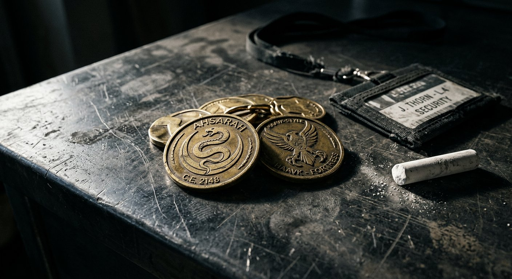
Trois monnaies, trois boutiques : les jetons de Brakkesh ne s’échangent pas là où le badge de faction progresse.
Le passe Aurora, gratuit et payant
Martelo s’obtient via le passe, et une partie des récompenses est sur la piste gratuite, une autre sur la piste payante. Le repère utile : les objets qui changent le jeu (opérateur, boîte sécurisée de saison, tickets, bons) tombent souvent des deux côtés, les apparences non. Avant de payer, regarde ce qui reste sur la piste gratuite : c’est souvent déjà l’essentiel.
Aurora n’est pas qu’un nom de saison : c’est le thème visuel qui a recoloré les cartes de la douzième.
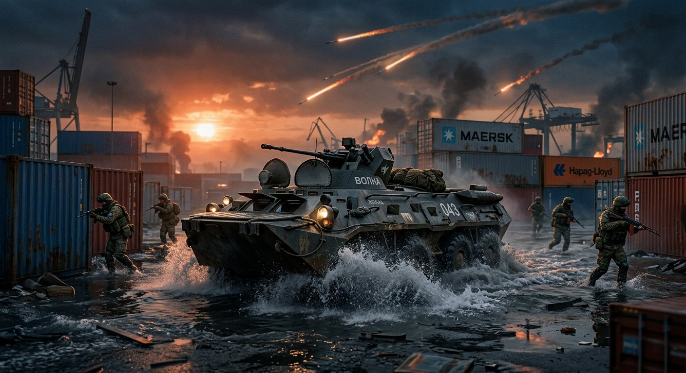
La Bataille de Zenith Port se joue les pieds dans l’eau : le terrain change de niveau au milieu de la partie.
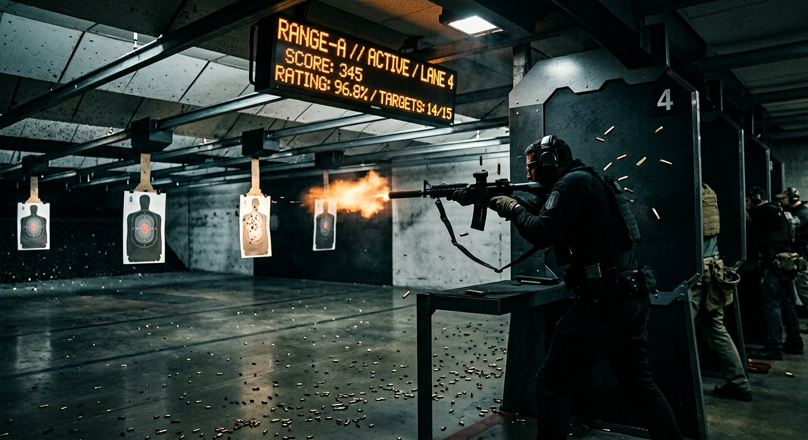
Le pas de tir 2.0 est le premier endroit du jeu où un build se mesure au lieu de se deviner.
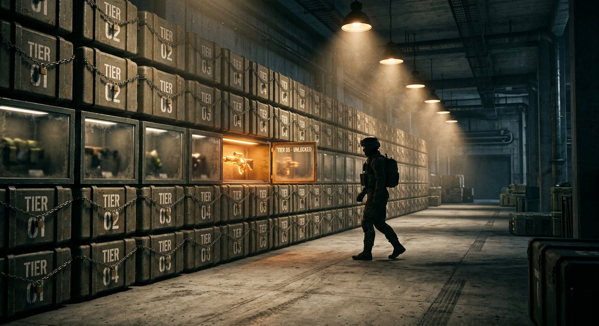
Le passe se lit de deux façons : ce qui est gratuit, et ce qui demande de payer le palier.
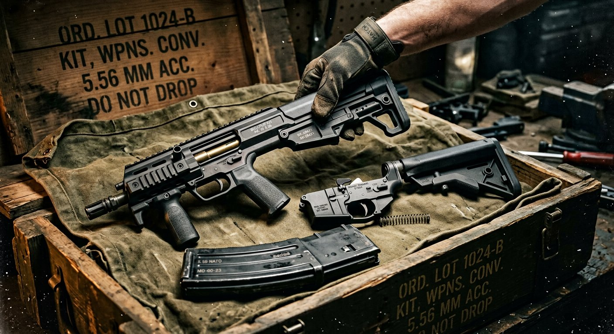
Trois pièces, une fenêtre de huit jours. Passé le 17 novembre, elles ne se retrouvent plus au marché.
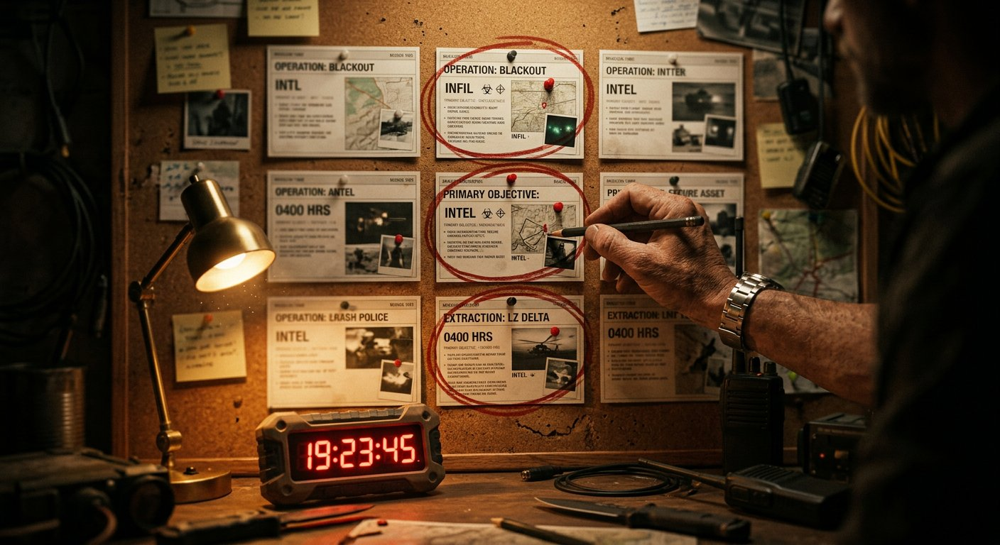
Les missions 3×3 se choisissent : trois objectifs sur neuf, et les six autres attendront la semaine suivante.
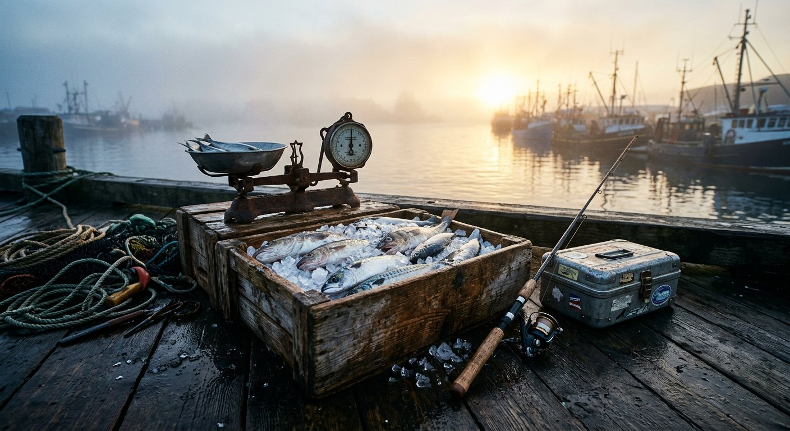
La pêche n’est pas un mini-jeu décoratif : c’est une source de revenus qui ne dépend d’aucun combat.
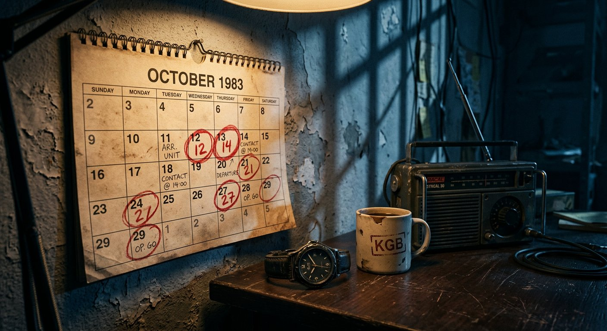
La saison se joue sur un calendrier, pas sur un compteur de parties.
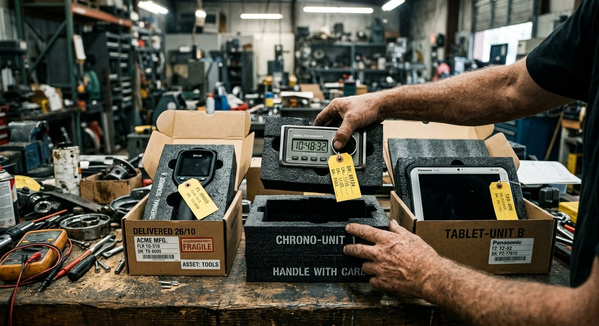
Aurora n’a pas ajouté que des armes : trois outils changent la façon de préparer un raid.
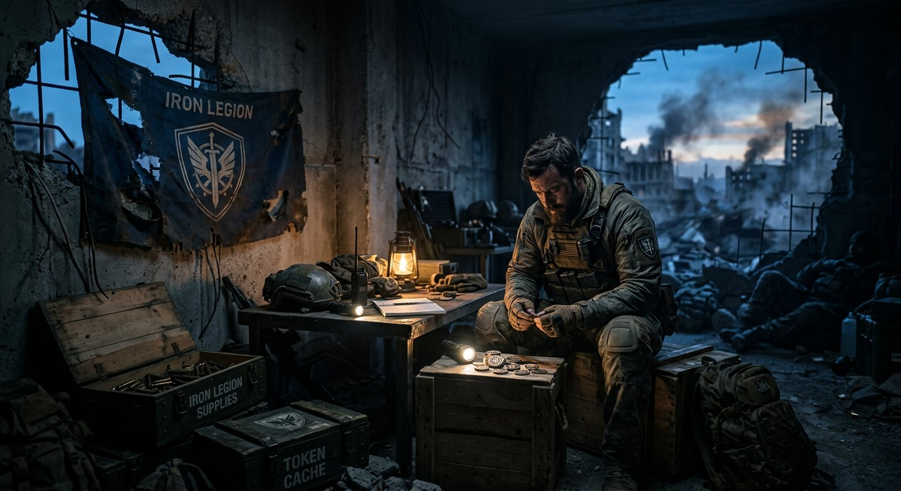
Le dernier jour d’un événement, on compte ce qui reste à dépenser. Après, les jetons ne valent plus rien.